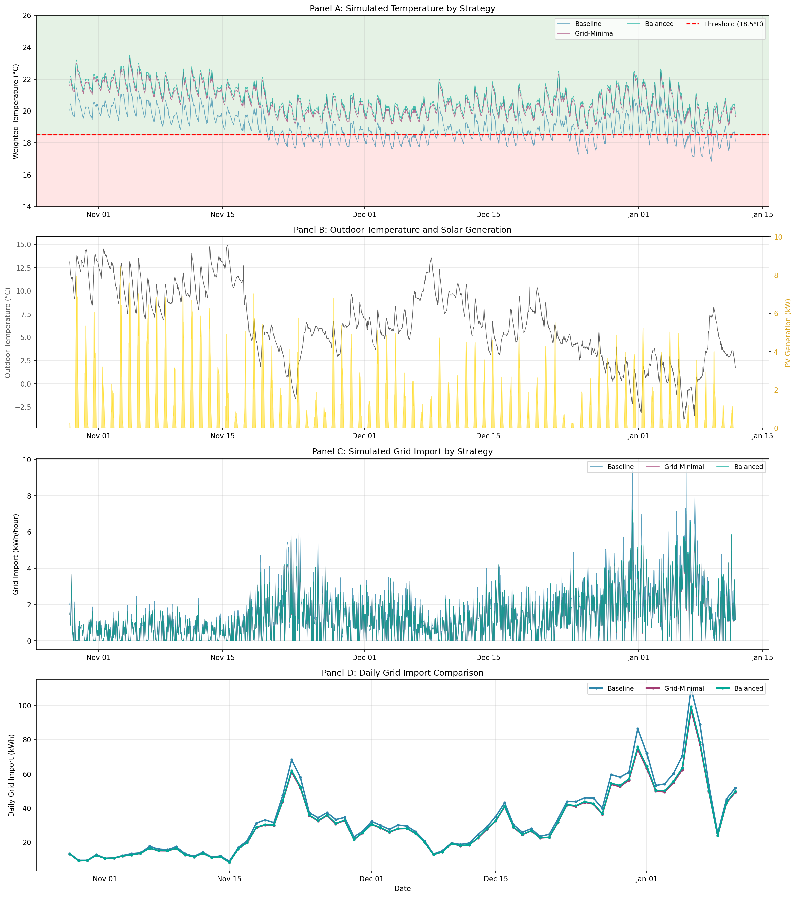

This analysis simulates energy consumption for each strategy using the corrected energy model
(BASE_LOAD=11.0 kWh/day, THERMAL_COEF=10.0 kWh/HDD).
Parameter
Value
Date Range
2025-10-28 to 2026-01-18
Total Days
83
Timesteps
3,968
Comfort Threshold
18.5°C
Occupied Hours
08:00 - 22:00
Strategy Parameters
Strategy
Comfort
Eco
Schedule
Curve Rise
Baseline
20.2°C
18.5°C
06:00-20:00
1.08
Grid-Minimal
22.0°C
19.0°C
12:00-16:00
1.02
Balanced
22.0°C
18.9°C
12:00-16:00
1.06
Energy Performance Comparison
Strategy
Grid Import (kWh)
vs Baseline
Heating (kWh)
Avg COP
Baseline
2733
+0.0%
2839
3.84
Grid-Minimal
2555
+6.5%
2665
4.02
Balanced
2598
+4.9%
2710
3.98
Temperature Performance (Occupied Hours)
Strategy
Mean (°C)
Min (°C)
5th %ile
Violation %
Baseline
19.3
17.1
18.2
16.1%
Grid-Minimal
21.1
18.9
20.0
0.0%
Balanced
21.5
19.3
20.4
0.0%
Visualizations

Figure 31: Time series showing (A) simulated temperature by strategy,
(B) outdoor temperature and PV generation, (C) simulated hourly grid import by strategy,
(D) daily grid import comparison.Figure 31: Hourly patterns showing (A) temperature profiles,
(B) grid import profiles, (C) COP profiles, (D) PV vs demand,
(E-F) grid import heatmaps for Baseline and Grid-Minimal strategies.Figure 31: Energy analysis showing (A) total energy comparison,
(B) grid savings vs baseline, (C) average COP, (D) daily grid distribution,
(E) temperature box plots, (F) summary table.
Key Findings
Best grid efficiency: Grid-Minimal saves
6.5%
grid import vs Baseline
Best COP: Grid-Minimal achieves COP 4.02
vs Baseline COP 3.84
Energy model calibration: Uses BASE_LOAD=11.0 kWh/day,
THERMAL_COEF=10.0 kWh/HDD (electrical = thermal/COP)